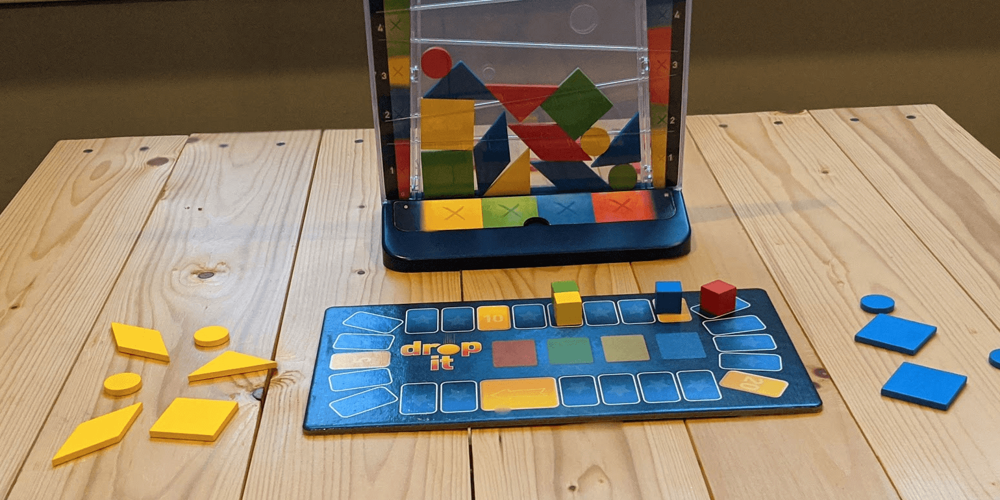
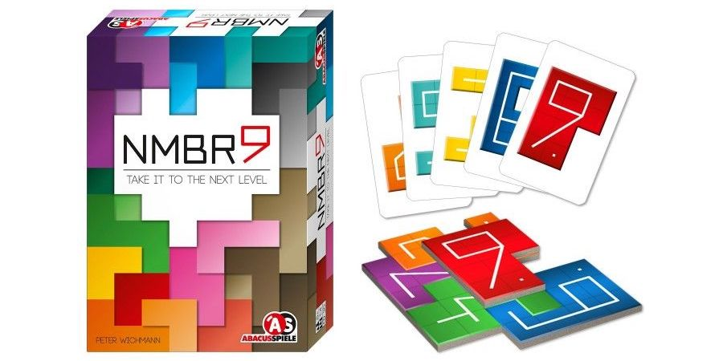
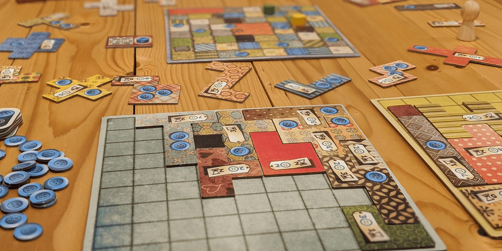

If you like Blokus, try these 3 games


"How could you do this to me?" - Every Blokus player
Blokus is a classic game where you strategically place Tetris-style pieces to control the board. It's a simple game, but there's nothing better than that feeling you get when a piece fits just right. And of course, you can mercilessly dash the hopes and dreams of your friends.
Here are 3 games that will also give you that satisfying experience while bringing new gameplay mechanics to the table.
Drop It!

Drop It! is a simple game that anyone can play and have fun with immediately. Like Blokus, you take turns strategically choosing and "placing" colored pieces. However, careful planning goes out the window in Drop It! and you usually will end your turn yelling and laughing.
Drop It! is also similar to Connect 4, except with circle, square, triangle, and rhombus pieces and no vertical tracks. You drop pieces into the top of a see-through plastic tower, hoping they fall into the right place. Points are awarded based on how your piece lands, but you have to avoid breaking any rules! If your piece touches another piece of the same shape or color, you get zero points for that turn.
This game is so unpredictable in a fun way, and your "perfectly" aligned rhombus will often fly across the tower to touch another rhombus. Zero points! Later on though, you'll drop your triangle just right, not break any rules, get some bonus points, and turn the game around.
If you're looking for something more casual and lighthearted than Blokus, definitely check out Drop It! You'll get 250% more laughter without the cutthroat blocking.
Buy Drop It! on Amazon
NMBR 9
If you enjoy the puzzle-y nature of Blokus but would rather not deal with pesky opponents getting in your way, NMBR 9 is for you. This game takes the Tetris-style pieces of Blokus to a new level by having you literally stack them on top of each other. You play completely in your own area, so it's impossible to block or get blocked by other players.
In NMBR 9, you will stack tiles in shapes of blocky numbers 0-9 on top of each other to score points. The level you place a number tile on determines its point multiplier. So if I place a 4 on level 1, I'll get 4 (4x1) points. If I place that 4 on level 2 instead, I'll earn 8 (4x2) points. That sounds simple enough, but there's a catch: you cannot place a tile if any part of it is hanging over an edge. This means that if you don't plan carefully, you might have to place that 9 directly on the table for 0 (9x0) points!
Similarly to Blokus, all players will use the same set of tiles in this game, playing one each turn. It all comes down to who planned their number stacks most efficiently! You can even play this game solo to compete for a personal best score. Overall, this game is a fun brain burner that's definitely less likely to ruin friendships than Blokus.
Buy NMBR 9 on Amazon
Patchwork
Patchwork is an awesome 2-player puzzle game that has a similar feel to Blokus, but in this game, your goal is to knit a patchwork quilt. Instead of having your own set of pieces to choose from, you and your opponent choose from fabric pieces laid out in the center of the table.
Quilt pieces are shaped like the ones in Blokus, but they are more intricate - they all cost buttons (money) and different amounts of time to knit. Time is expressed as a spiraling track on a board shared by both players, and once a player reaches the end of the track, their quilt is finished and their opponent continues. You may end with a different number of quilt pieces!
Some pieces also award buttons each turn which make them more valuable, as buttons are both your points and money. Patchwork is all about choosing pieces that will not only fit nicely, but will also set you up for later in the game. The winner will be the person who has accumulated the most points at the end of the game, which will be your buttons minus any empty quilt squares.
If you have played the 2-player Blokus but want something with more variety and complexity, look no further than Patchwork. This is such a well-designed game, and it can be played many times over without losing its charm.
Buy Patchwork on Amazon